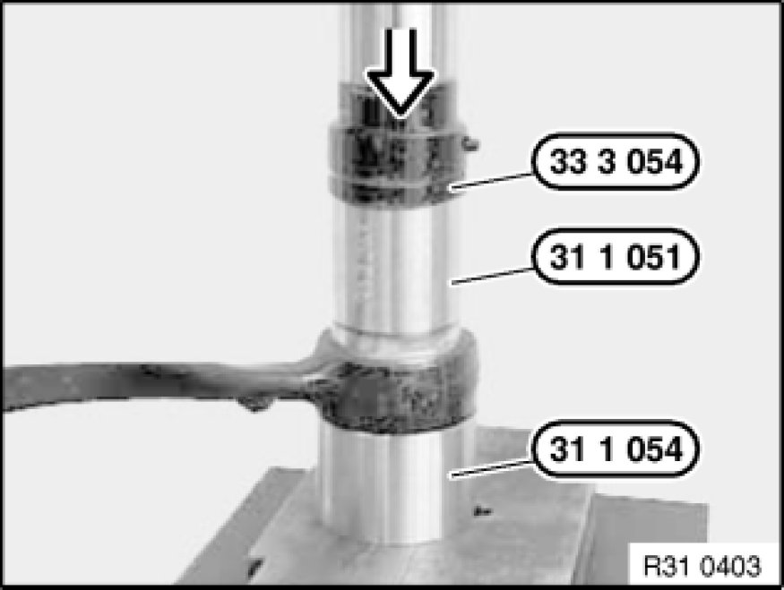
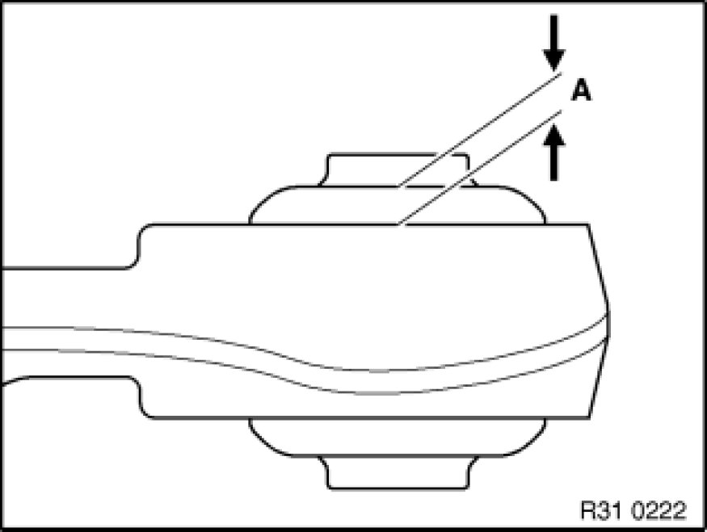

Replacing Rubber Mounts in Both Control Arms (Control Arms Removed)
31 12 640 - Replacing rubber mounts in both control arms (control arms removed)

Special tools required:
- 31 1 051 31 1 050 Tool
- 31 1 054 31 1 050 Tool
- 33 3 054 33 3 050 Fixture

Press out rubber mount with special tools 31 1 051 31 1 050 Tool, 31 1 054 31 1 050 Tool and 33 3 054 33 3 050 Fixture.
Installation:
Keep rubber mount and bore in control arm clean and free from grease.
Press in rubber mount from chamfered side of control arm bore.

Installation:
Protrusion (A) = 5.75 ± 0.7 mm.

After installation:
- Perform chassis alignment check
- Carry out steering angle sensor adjustment Adjustments